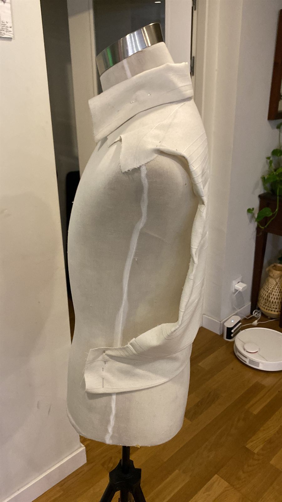
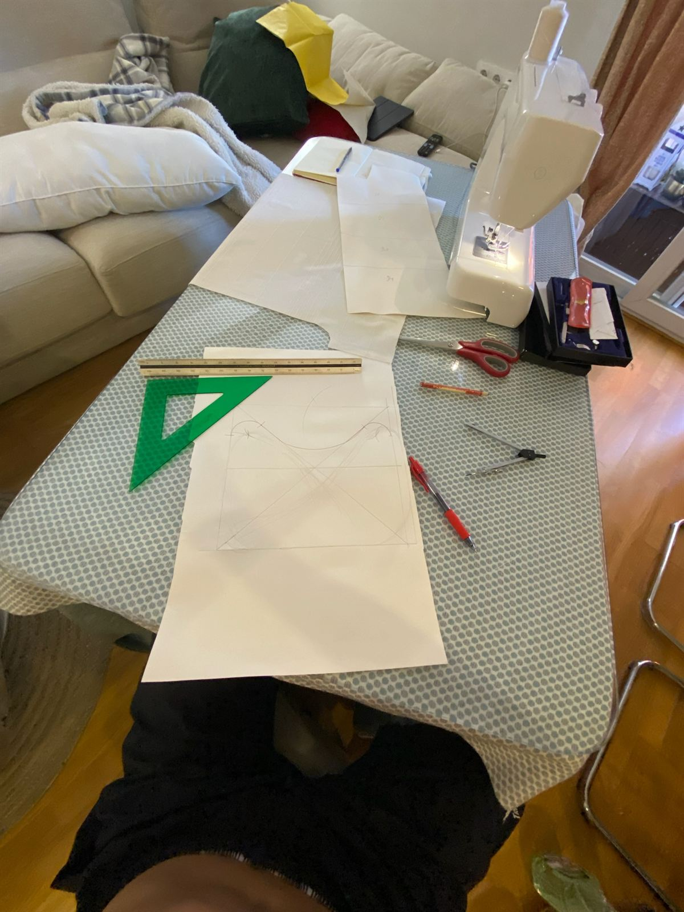
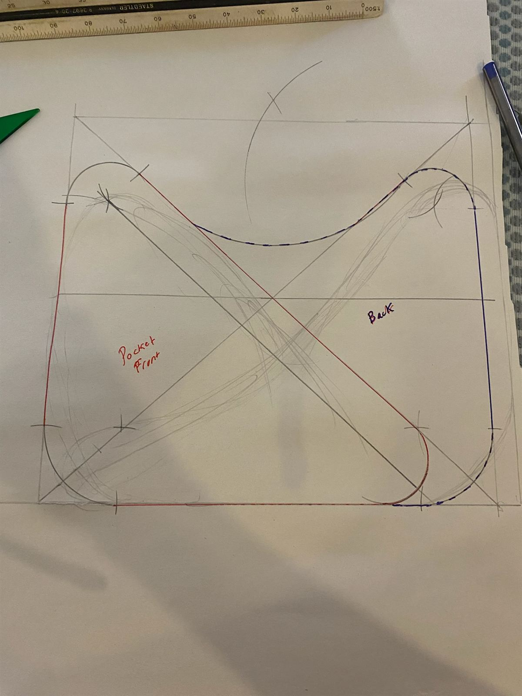
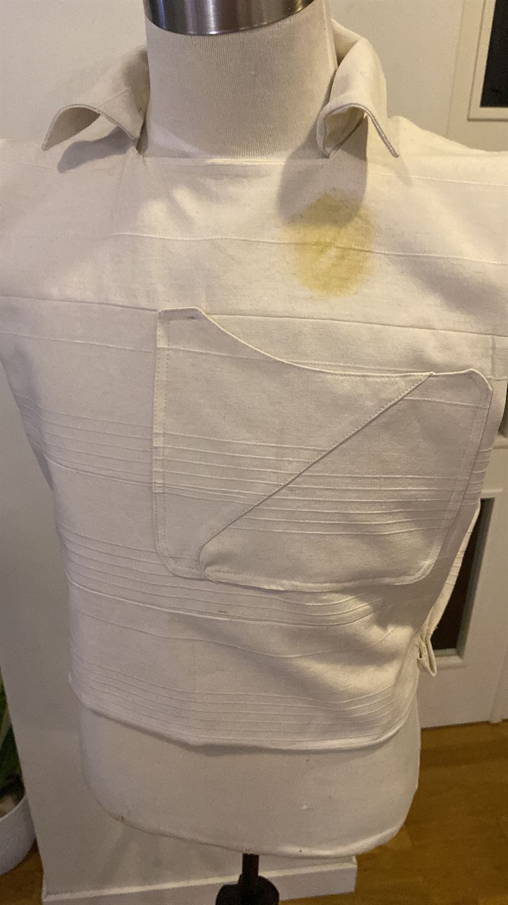
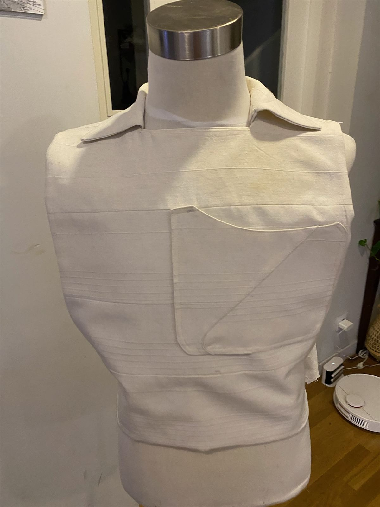
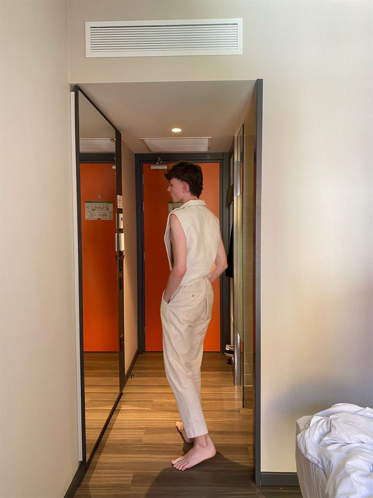
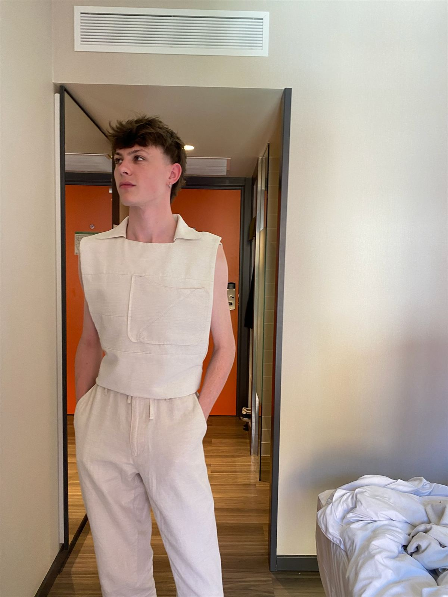
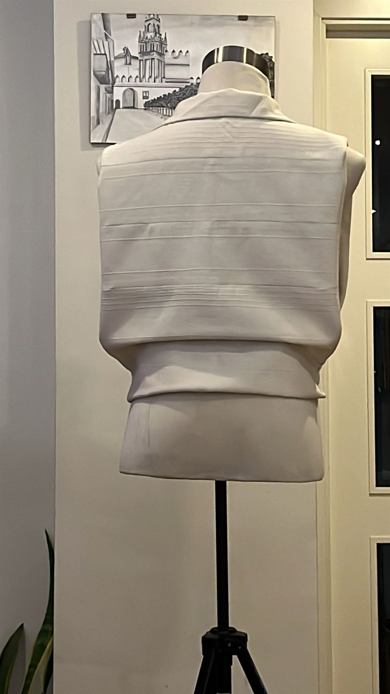
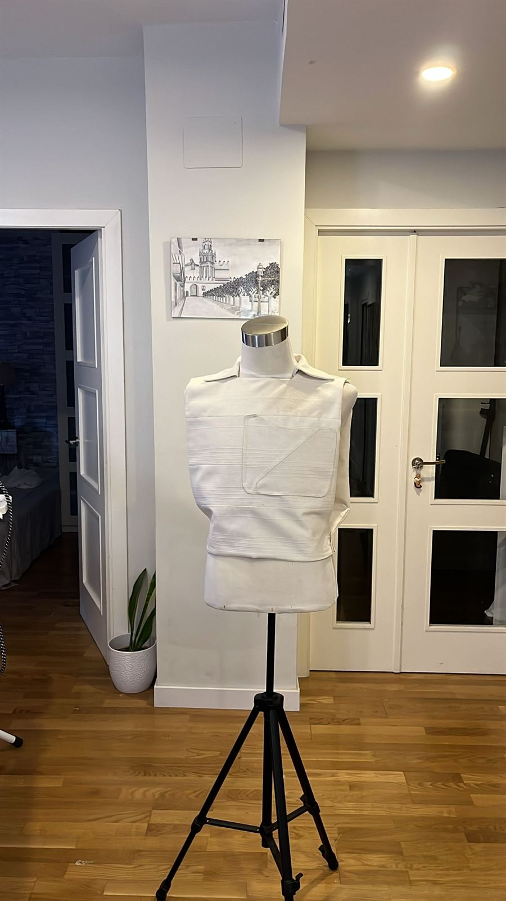

Top — study after Jacquemus
2024Study afterCotton-linen











The brief
A small piece among seven larger ones, chosen for the fit. The top is almost nothing, so everything depends on how close it sits to the body.
The pattern
Drafted from my own measurements. The difficulty was the pintucks: each fold takes cloth out of the width, so I stitched them on a plain rectangle first and cut the pattern afterwards, not the other way round.
Spec
- Year
- 2024
- Reference
- Pintucked sleeveless top, Jacquemus
- Pattern
- Drafted from measurements
- Materials
- Off-white cotton-linen
- Build time
- Two weeks
- Where it is
- Given away
What I learned
On a piece this small there is no margin: two millimetres per tuck added up to three centimetres across the chest. I learned to measure after the process, not before it.